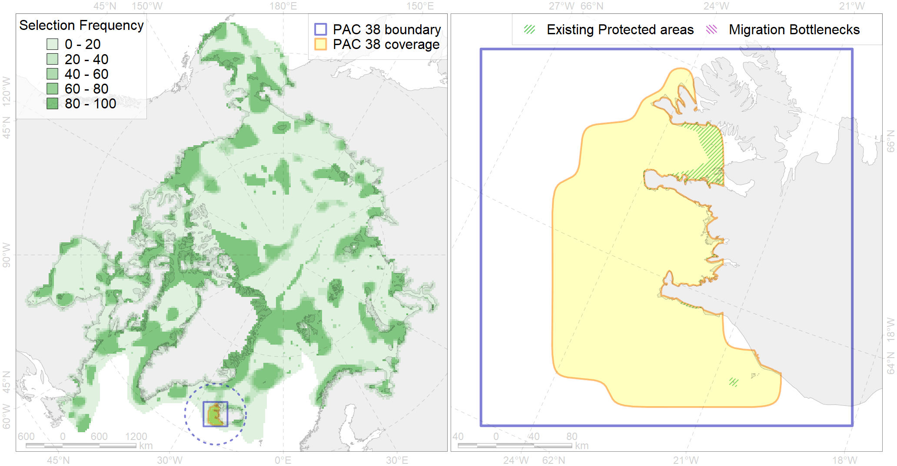

Region 38
Region 38
“ArcNet” scenario 33 achievement for region 38.
Use Accenter for advanced mode.

0
CFs inside of Region completely
8
CFs inside of Region at quarter
10
Complete-targets achievement by Region
20
Half-targets achievement by Region
| CF | Name | Target Achievement for Region | Proportion of Target Achievement in Region | Amount Proportion in Region |
|---|---|---|---|---|
| 7248 | seagrasses of Iceland | 159.8% | 82.5% | 66.7% |
| 7212 | V.2.1. South Iceland shelf and glacial troughs | 372.8% | 70.6% | 48.3% |
| 6060 | Common eider (Somateria mollissima borealis) Iceland breeding&moulting grounds | 62.8% | 60.2% | 42.6% |
| 7054 | cold corals of Iceland and East Greenland | 77.1% | 74.9% | 40.0% |
| 6054 | Common eider (Somateria mollissima borealis) Iceland wintering grounds | 58.0% | 54.9% | 39.2% |
| 7226 | Kelp forests of Iceland | 171.0% | 59.7% | 34.9% |
| 4069 | Spawning areas of the Atlantic herring (Clupea harengus) (F6) | 442.1% | 66.3% | 29.7% |
| 6086 | Long-tailed duck (Clangula hyemalis) Iceland moulting&migration stopovers | 46.5% | 45.7% | 28.2% |
| 5055 | Harbour porpoise feeding areas in Iceland | 328.4% | 51.7% | 22.9% |
| 4082 | Fish zoogeography, Atlantic Boreal Region, low-boreal district of the Eastern Atlantic subregion | 284.0% | 68.8% | 21.9% |
| 6075 | Common murre (Uria aalge aalge) breeding grounds | 37.9% | 36.0% | 21.5% |
| 7029 | Iceland region | 110.8% | 49.9% | 19.1% |
| 7213 | V.2.2. South Iceland slope | 105.7% | 77.7% | 16.5% |
| 5066 | Minke whale feeding areas in the Central Atlantic | 97.4% | 29.2% | 13.5% |
| 4086 | Fish zoogeography, Arctic Region, Subarctic Transitional-Atlantic Province, Iceland District | 55.2% | 33.6% | 13.1% |
| 6047 | Black-legged kittiwake (Rissa tridactyla pollicarius) breeding colonies | 17.2% | 14.8% | 12.8% |
| 6101 | 6101 Uriaalge aalge breeding colonies | 27.9% | 19.7% | 11.6% |
| 2017 | Grey seal distribution range | 164.3% | 23.1% | 11.4% |
| 7209 | V.1.1.1. North Iceland medium and low profile shelf | 67.2% | 30.9% | 11.1% |
| 5098 | White-beaked dolphin feeding area in the Central North Atlantic | 64.2% | 21.2% | 8.6% |
| 4068 | Migration area of European Eel (Anguilla anguilla) (F5): | 29.3% | 16.0% | 7.9% |
| 5059 | Humpback whale summer feeding areas in the Eastern Greenland and Iceland | 52.9% | 17.8% | 7.5% |
| 5048 | Fin whale summer feeding areas in the East Greenland and West Iceland | 21.9% | 21.8% | 6.8% |
| 5064 | Killer whale summer feeding areas in the North East Atlantic | 96.2% | 16.1% | 6.5% |
| 7208 | V.1.1. North Iceland shelf | 31.8% | 21.0% | 6.0% |
| 5037 | Blue whale summer feeding areas in the Northeast Atlantic | 17.4% | 13.2% | 5.1% |
| 6106 | 6106 Urilomvilomvibreeding colonies | 7.0% | 5.1% | 3.8% |
| 4054 | Range of the Shorthorn Sculpin (Myoxocephalus scorpius) (F 46), European populations | 102.5% | 7.5% | 3.5% |
| 4030 | Feeding area of the Arctic charr (Salvelinus alpinus), anadromous populations (F28) | 7.6% | 6.7% | 3.2% |
| 6099 | 6099 Rissa tridactyla tridactyla breeding colonies | 4.1% | 4.1% | 3.1% |
| 4027 | Feeding/migration area of the Atlantic salmon (Salmo salar) American populations (F27) | 12.4% | 8.5% | 2.9% |
| 6076 | Common murre (Uria aalge aalge) wintering grounds | 12.2% | 6.5% | 2.5% |
| 2019 | Harbour seal range in the North Atlantic region | 34.0% | 5.2% | 2.4% |
| 4057 | Range of the American Plaice (Hippoglossoides platessoides) (F 47), American populations | 63.2% | 5.7% | 2.2% |
| 4049 | Range of the Haddock (Melanogrammus aeglefinus) (F 42) | 31.3% | 5.0% | 2.1% |
| 6049 | Black-legged kittiwake (Rissa tridactyla tridactyla) wintering grounds | 5.6% | 5.6% | 2.1% |
| 6023 | Atlantic puffin (Fratercula arctica naumanni) wintering grounds | 6.7% | 5.4% | 1.9% |
| 6082 | Thick-billed murre (Uria lomvia lomvia) breeding colonies | 1.7% | 1.5% | 1.4% |
| 6002 | Little Auk (Alle alle alle) winetring grounds | 4.8% | 3.3% | 1.3% |
| 4045 | Feeding/migration area of the Pink Salmon (Oncorhynchus gorbuscha), native distribution (F23) | 15.4% | 2.5% | 1.1% |
| 6083 | Thick-billed murre (Uria lomvia lomvia) wintering grounds | 3.7% | 2.6% | 1.0% |
| 4059 | Range of the Greenland Halibut (Reinhardtius hippoglossoides) (F 49) | 29.0% | 2.4% | 1.0% |
| 4017 | Feeding/ migration area of the Greenland Shark (Somniosus microcephalus) (F1) | 3.7% | 2.2% | 0.9% |
| 4003 | Range of the Atlantic Capelin (Mallotus villosus) (F10) | 26.6% | 2.2% | 0.9% |
| 6029 | Glaucous gull (Larus hyperboreus euceretes) breeding grounds | 5.2% | 1.2% | 0.9% |
| 4046 | Range of the Thorny Skate (Amblyraja radiata) (F 3) | 9.8% | 1.8% | 0.8% |
| 3024 | Marginal Ice Zone distribution in April in the Iceland LME | 0.6% | 0.4% | 0.1% |
| 4085 | Fish zoogeography, Arctic Region, Subarctic Transitional-Atlantic Province, Labrador – S Greenland District | 0.6% | 0.1% | 0.1% |
| 4037 | Distribution of the Glacial cod (Arctogadus glacialis) (F34) | 0.1% | 0.0% | 0.0% |
| 4032 | Range of the Arctic skate (Amblyraja hyperborea) (F2) | 0.1% | 0.0% | 0.0% |